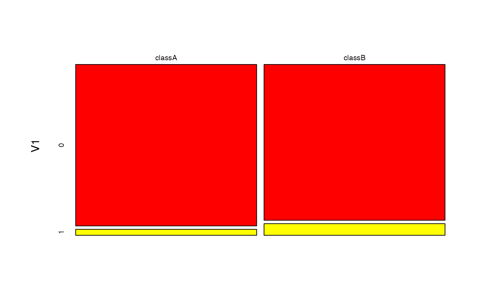

Bernoulli Naive Bayes Classifier
bernoulli_naive_bayes.Rdbernoulli_naive_bayes is used to fit the Bernoulli Naive Bayes model in which all class conditional distributions are assumed to be Bernoulli and be independent.
bernoulli_naive_bayes(x, y, prior = NULL, laplace = 0, ...)
Arguments
| x | matrix with numeric 0-1 predictors. |
|---|---|
| y | class vector (character/factor/logical). |
| prior | vector with prior probabilities of the classes. If unspecified, the class proportions for the training set are used. If present, the probabilities should be specified in the order of the factor levels. |
| laplace | value used for Laplace smoothing (additive smoothing). Defaults to 0 (no Laplace smoothing). |
| ... | not used. |
Value
bernoulli_naive_bayes returns an object of class "bernoulli_naive_bayes" which is a list with following components:
list with two components: x (matrix with predictors) and y (class variable).
character vector with values of the class variable.
amount of Laplace smoothing (additive smoothing).
matrix with class conditional probabilities for the value 1. Based on this matrix full probability tables can be constructed. Please, see tables and coef.
numeric vector with prior probabilities.
the call that produced this object.
Details
This is a specialized version of the Naive Bayes classifier, in which all features take on numeric 0-1 values and class conditional probabilities are modelled with the Bernoulli distribution.
The Bernoulli Naive Bayes is available in both, naive_bayes and bernoulli_naive_bayes. The implementation of the specialized Naive Bayes provides more efficient performance though. The speedup comes from the restricting the data input to a numeric 0-1 matrix and performing the linear algebra as well as vectorized operations on it. In other words, the efficiency comes at cost of the flexibility.
The bernoulli_naive_bayes function is equivalent to the naive_bayes function when the numeric 0-1 matrix is coerced to, for instance, a 0-1 character matrix.
The missing values (NAs) are omited while constructing the probability tables. The NAs in the newdata in predict.gaussian_naive_bayes are not included into the calculation of posterior probabilities; and if present an informative warning is given.
See also
naive_bayes, predict.bernoulli_naive_bayes, plot.bernoulli_naive_bayes, tables, get_cond_dist, %class%
Examples
### Simulate the data: cols <- 10 ; rows <- 100 ; probs <- c("0" = 0.4, "1" = 0.1) M <- matrix(sample(0:1, rows * cols, TRUE, probs), nrow = rows, ncol = cols) y <- factor(sample(paste0("class", LETTERS[1:2]), rows, TRUE, prob = c(0.3,0.7))) colnames(M) <- paste0("V", seq_len(ncol(M))) laplace <- 0.5 ### Train the Bernoulli Naive Bayes bnb <- bernoulli_naive_bayes(x = M, y = y, laplace = laplace) bnb#> #> ============================= Bernoulli Naive Bayes ============================= #> #> Call: #> bernoulli_naive_bayes(x = M, y = y, laplace = laplace) #> #> --------------------------------------------------------------------------------- #> #> Laplace smoothing: 0.5 #> #> --------------------------------------------------------------------------------- #> #> A priori probabilities: #> classA classB #> 0.36 0.64 #> #> --------------------------------------------------------------------------------- #> #> Tables: #> #> --------------------------------------------------------------------------------- #> ::: V1 (Bernoulli) #> --------------------------------------------------------------------------------- #> classA classB #> 0 0.8243243 0.8692308 #> 1 0.1756757 0.1307692 #> #> --------------------------------------------------------------------------------- #> ::: V2 (Bernoulli) #> --------------------------------------------------------------------------------- #> classA classB #> 0 0.6081081 0.7461538 #> 1 0.3918919 0.2538462 #> #> --------------------------------------------------------------------------------- #> ::: V3 (Bernoulli) #> --------------------------------------------------------------------------------- #> classA classB #> 0 0.8513514 0.7153846 #> 1 0.1486486 0.2846154 #> #> --------------------------------------------------------------------------------- #> ::: V4 (Bernoulli) #> --------------------------------------------------------------------------------- #> classA classB #> 0 0.6351351 0.7615385 #> 1 0.3648649 0.2384615 #> #> --------------------------------------------------------------------------------- #> ::: V5 (Bernoulli) #> --------------------------------------------------------------------------------- #> classA classB #> 0 0.7702703 0.8384615 #> 1 0.2297297 0.1615385 #> #> --------------------------------------------------------------------------------- #> #> # ... and 5 more tables #> #> --------------------------------------------------------------------------------- #>#> classA classB #> [1,] 0.1536234 0.8463766 #> [2,] 0.3689116 0.6310884 #> [3,] 0.4345206 0.5654794 #> [4,] 0.2376475 0.7623525 #> [5,] 0.3954596 0.6045404 #> [6,] 0.2230504 0.7769496### Equivalent calculation with general naive_bayes function. ### (it is made sure that the columns are factors with the 0-1 levels) df <- as.data.frame(lapply(as.data.frame(M), factor, levels = c(0,1))) # sapply(df, class) nb <- naive_bayes(df, y, laplace = laplace) head(predict(nb, type = "prob"))#> classA classB #> [1,] 0.1536234 0.8463766 #> [2,] 0.3689116 0.6310884 #> [3,] 0.4345206 0.5654794 #> [4,] 0.2376475 0.7623525 #> [5,] 0.3954596 0.6045404 #> [6,] 0.2230504 0.7769496#> #> --------------------------------------------------------------------------------- #> ::: V1 (Bernoulli) #> --------------------------------------------------------------------------------- #> classA classB #> 0 0.8243243 0.8692308 #> 1 0.1756757 0.1307692 #> #> ---------------------------------------------------------------------------------#> #> --------------------------------------------------------------------------------- #> ::: V1 (Bernoulli) #> --------------------------------------------------------------------------------- #> #> V1 classA classB #> 0 0.8243243 0.8692308 #> 1 0.1756757 0.1307692 #> #> ---------------------------------------------------------------------------------coef(bnb)#> classA:0 classA:1 classB:0 classB:1 #> V1 0.8243243 0.17567568 0.8692308 0.1307692 #> V2 0.6081081 0.39189189 0.7461538 0.2538462 #> V3 0.8513514 0.14864865 0.7153846 0.2846154 #> V4 0.6351351 0.36486486 0.7615385 0.2384615 #> V5 0.7702703 0.22972973 0.8384615 0.1615385 #> V6 0.7432432 0.25675676 0.8230769 0.1769231 #> V7 0.7432432 0.25675676 0.7923077 0.2076923 #> V8 0.8513514 0.14864865 0.7307692 0.2692308 #> V9 0.8513514 0.14864865 0.8384615 0.1615385 #> V10 0.9324324 0.06756757 0.7461538 0.2538462# Check the equivalence of the class conditional distributions all(get_cond_dist(bnb) == get_cond_dist(nb))#> [1] TRUE